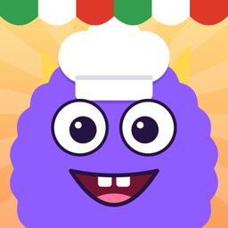

Privacy Policy
Snorfle's Pizzeria · Last updated 16 November 2026
Snorfle's Pizzeria doesn't collect any data.
The app is made for young children. It has no account, no analytics, no advertising and no tracking, and it doesn't connect to the internet.
It doesn't ask for any personal information, and it doesn't use the camera, microphone, location, contacts or photos.
The only things it saves are game progress: the stars and stickers earned, how many dishes have been served, and which Italian words have been heard. These stay on your device, inside the app. Deleting the app removes them.
There are no in-app purchases and no links to websites or other apps.
If this policy ever changes, the new version will be posted on this page.
Questions: jacobtodd85@gmail.com